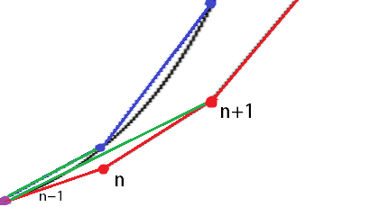

Min plan var att göra en pendel men först vill jag ha en bra ode-lösare.
Det finns ett exempel i slutet som du kan hoppa till om du redan är inläst.
Vi börjar med att definiera problemet:
Vi säger att funktionen deriverar med avseende på
Man kan såklart sätta för att få:
Eulers metod
Den lättaste lösningen är Eulers-metod: (aka Eulers stegmetod, Eulersteg, osv.)
Vi testar med det lättaste fallet:
Vilket ger oss: (tidsinvariant)
Man ser snabbt i plotten att Eulers metod underskattar funktionsvärdet.
Man kan räkna ut felet med hjälp av en annan härledning av Eulers metod.
Vi börjar med taylor-serien för i punkt :
Nu byter vi ut mot med och skriver det i diskret form:
Med blir de första två termerna:
Det ser ju i princip exakt ut som uttrycket för Eulers metod.
Därför kan vi subtrahera bort uttrycket för Eulers metod från taylor-utvecklingen och få felet:
Hur ska vi då göra för att minska felet?
En bra start kan ju vara att plocka lite fler termer från taylor-serien, då tar det längre tid för felet att ackumuleras.
Problemet blir att derivera ...
Kan det finnas något annat sätt att minska felet?
Eftersom vi räknar med derivatan i punkt kommer
den hinna ändras hos lösningen innan vi når punkt .
Om man istället tar ett eulersteg från till och sedan ett till
och räknar derivatan från till
borde den stämma bättre överens med den sanna funktionen.
Kolla bara på dom gröna linjerna, dom ser ju ut att stämma rätt bra,
vi måste bara komma ihåg att dela med 2.

Mittpunktsmetoden
Mittpunktsmetoden/modifierat eulersteg: (likt trapetsmetoden)
För att ta vårt extra steg kan vi ju helt enkelt mata funktionen med sig själv.
I exemplet
blir mittpunktssteget:
Vilket är Eulersteget med en extra term från taylor-serien. I plotten syns att mittpunktsmetoden är betydligt bättre än Eulers metod.
Men vi har fler termer i taylor-serien så vi kan hitta en bättre lösning.
Runge-Kutta 4
Alla metoderna ovan är del av Runge-Kutta familjen.
RK4 blir sista bossen idag.
Då Eulersteget inkluderar 2 termer från taylor-utvecklingen kallar vi den en första ordningens Runge-Kutta metod. (Vi räknar inte första termen)
Då följer att mittpunktsmetoden blir en andra ordningens RK metod.
Vi skiter i 3:dje ordningens metoder och går direkt på 4:de
Här tar man 4 skattningar och räknar ut ett viktat genomsnitt av derivatan. Hemläxa blir att härleda
för:
Fet hint: det är en fjärde ordningens metod
Formeln för RK4 ser ut som en röra så för att snygga till det finns Butcher-tabellen:
...
...
⋮
⋮
⋱
...
...
...
Där:
RK4:s tabell:
0
½
½
½
0
½
1
0
0
1
⅙
⅓
⅓
⅙
Tabellerna ovan kan användas i formeln:
Och här är Butcher-tabellerna för Euler:
0
1
och för midpoint:
0
α
α
Där Ger mittpunktsmetoden och ger Heuns metod.
Så alla dessa metoder är bara diskreta integratorer, vilket inte låter särskillt spännande,
man behöver ju inte vara Einstein reinkarnerad för att lösa exempel-ekvationen...
Men det finns system där ett försök till en analytisk lösning vore psykologiskt självmord.
Om det låter spännande har jag gjort ett exempel: Lorentz-attraktorn